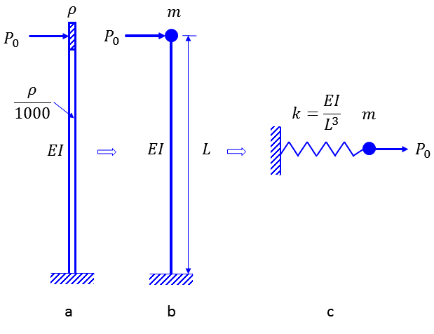
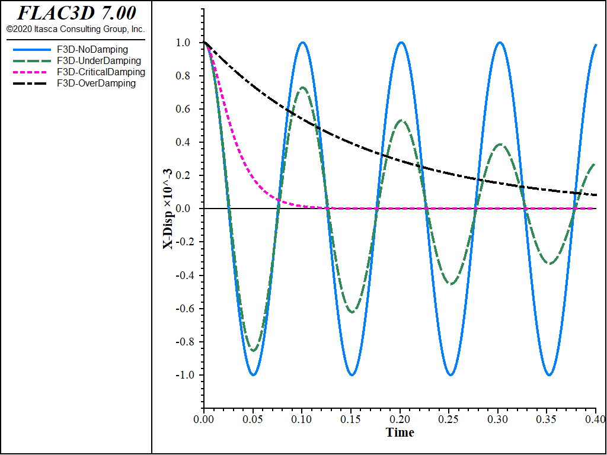
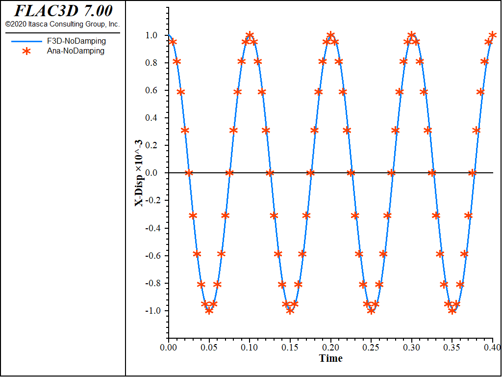
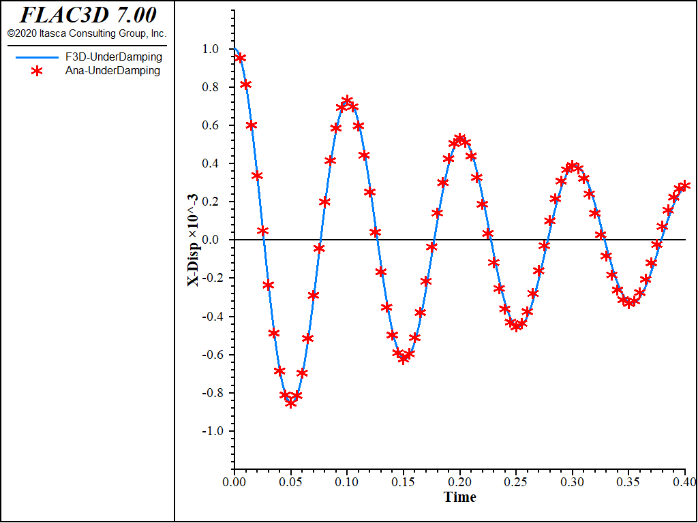
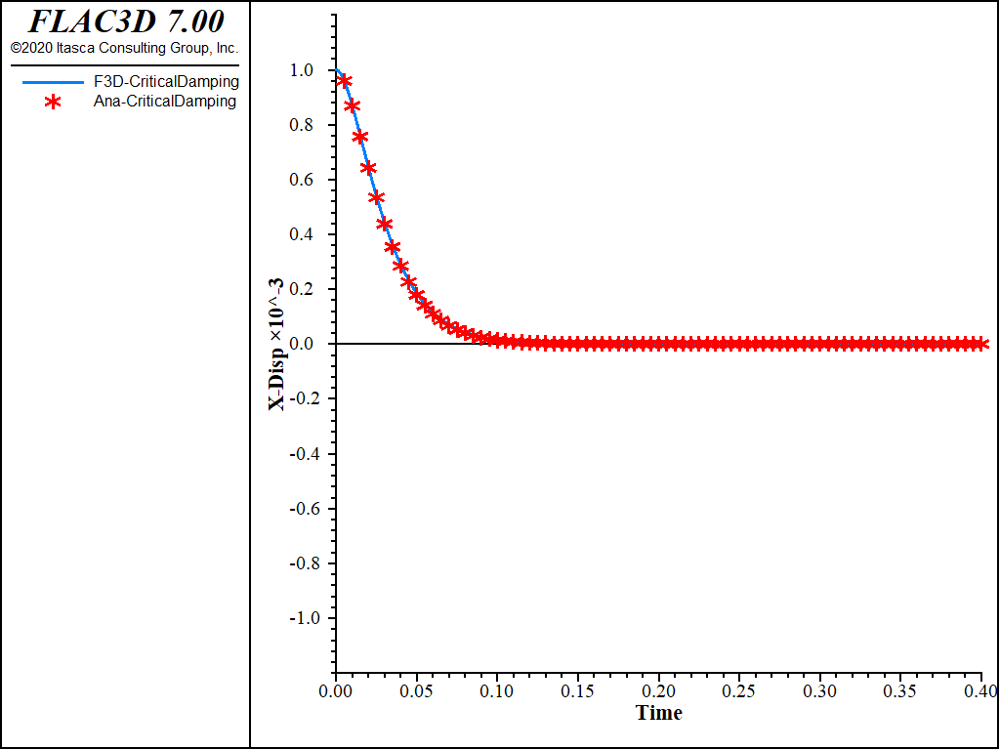
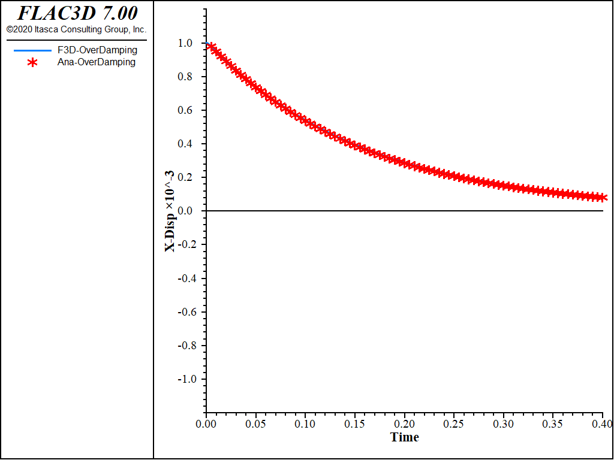

悬臂梁的自由振动
问题描述
注意
要在 FLAC3D 中查看该项目，请使用菜单命令 。选择 “Structure/Beam/FreeVibration” 并选中 “FreeVibration.f3prj” 载入。所用 主数据文件（main data file） 示于本例末尾。其余数据文件可在该项目中找到。
竖立一根悬臂梁（见 图 1（Figure 1））。梁顶部的密度远大于梁上其他位置（图 1（Figure 1）a）。在顶部质量形心施加水平力 \(P_0 = k U_0\)，使梁顶产生 0.001 的静态水平位移，然后释放该力让梁振动。图 1（Figure 1）a 所示模型可简化为 图 1（Figure 1）b，即在梁顶有集中质量 \(m\)。还可进一步理想化为 图 1（Figure 1）c 所示的单自由度振动系统，其质量为 \(m\)、刚度为 \(k=EI/L^3\)。阻尼系数 \(c\) 将取不同值。基于 图 1（Figure 1）a 的 FLAC3D 模型采用梁单元，并把 FLAC3D 解与基于 图 1（Figure 1）c 的解析解比较。


图 1：悬臂梁的自由振动。
几何与材料参数汇总如下。
| 输入参数： | |
| \(E\) | 2×1010 |
| \(I\) | 1 |
| \(L\) | 10 |
| \(\rho\) | 7.60×103 |
| \(A\) | 1 |
| \(P_0\) | 6×104 |
| 导出参数： | |
| \(m\) | 1.52×104 |
| \(k\) | 6×107 |
| \(U_0\) | 0.001 |
| \(T_n\) | 0.1 |
| \(\omega_n\) | 20 \(\pi\) |
带阻尼单自由度系统自由振动的控制微分方程为
其中 \(u\) 为位移，\(m\) 为质量，\(k\) 为刚度，\(c\) 为阻尼系数。固有圆频率为 \(\omega_n = \sqrt{k/m}\)，固有周期为 \(T_n = 2\pi/\omega_n\)。
临界阻尼系数定义为 \(c_{cr} = 2m\omega_n = 2\sqrt{km}\)，阻尼比定义为 \(\zeta = c/c_{cr}\)。
本例假定 Rayleigh 阻尼（\(c = \beta k + \alpha m\)）。为简便起见此处只考虑质量比例 Rayleigh 阻尼（\(\beta = 0\)），因此
本例中动力阶段的初始条件为 \(u(0) = U_0\) 与 \(\dot{u}(0)=0\)。在这些初始条件下，解析解（Argris 1991）可概括为
无阻尼 （\(\zeta=0\) 或 \(\alpha=0\)）：
(3)\[u(t) = U_0 \cos{(\omega_n t)}\]欠阻尼 （\(0 < \zeta < 1\) 或 \(0 < \alpha < 2\omega_n = 4\pi/T_n\)）：
(4)\[u(t) = U_0 e^{-\zeta \omega_n t} \left[ \cos{(\omega_D t)} + {\zeta \over {\sqrt{1-\zeta^2}}} \sin{(\omega_D t)} \right]\]where \(\omega_D = \omega_n \sqrt{1-\zeta^2}\).
临界阻尼 （\(\zeta = 1\) 或 \(\alpha = 2\omega_n = 4\pi/T_n\)）：
(5)\[u(t) = U_0 (1+\omega_n t) e^{-\omega_n t}\]过阻尼 （\(\zeta > 1\) 或 \(\alpha > 2\omega_n = 4\pi/T_n\)）：
(6)\[u(t) = {U_0 \over 2\sqrt{(\zeta^2-1)}} \left[ c_2 e^{-c_1 \omega_n t} - c_1 e^{-c_2 \omega_n t} \right]\]其中 \(c_1 = \zeta-\sqrt{\zeta^2-1}\) 与 \(c_2 = \zeta+\sqrt{\zeta^2-1}\)。
在 FLAC3D 模型中，梁被划分为 10 个梁单元。在集中质量形心施加水平静力 \(P_0\)。达到平衡后静位移应为 \(U_0 = P_0/k = 0.001\)。随后释放该力，让悬臂梁以四种不同阻尼比自由振动：\(\zeta\) = 0%、5%、100% 与 500%，或 \(\alpha\) = 0、\(2\pi\)、\(40\pi\) 与 \(200\pi\)（因 \(T_n\) = 0.1），以代表无阻尼、欠阻尼、临界阻尼与过阻尼四种情形。
四个算例的 FLAC3D 解都绘于 图 2（Figure 2），与解析解的比较绘于 图 3（Figure 3） 至 图 6（Figure 6）。所有情形下 FLAC3D 解与解析解都吻合良好。


图 2：FLAC3D 解。


图 3：FLAC3D 解与解析解——无阻尼（\(\alpha\) = 0 或 \(\zeta\) = 0%）。


图 4：FLAC3D 解与解析解——欠阻尼（\(\alpha\) = 2 \(\pi\) 或 \(\zeta\) = 5%）。


图 5：FLAC3D 解与解析解——临界阻尼（\(\alpha\) = 40 \(\pi\) 或 \(\zeta\) = 100%）。


图 6：FLAC3D 解与解析解——过阻尼（\(\alpha\) = 200 \(\pi\) 或 \(\zeta\) = 500%）。
参考文献
Argyris, J. & Mlejnek, H.-P. Dynamics of Structures. North-Holland, Amsterdam (1991).
数据文件
FreeVibration.dat
model new
model large-strain off
model configure dynamic
model dynamic active off
;
[global L = 10.0]
[global E = 2.0e10]
[global I = 1.0]
[global A = 1.0]
[global k = 3.0*E*I/(L*L*L)]
[global T = 0.1]
[global m = T*T/(4*math.pi*math.pi)*k]
[global r = m/A/2.0]
[global c = 4.0*math.pi/T]
;
structure beam create by-line (0,0,0) (0,0,11) segments 11 id 1
structure beam property density [0.001*r] young [E] poisson 0.3
structure beam property density [r] range position-z 9.0 11.0
structure beam property cross-sectional-area [A] moi-z [I] moi-y [I] ...
moi-polar 0
structure node fix velocity range component-id 1
structure node fix rotation range component-id 1
structure node apply system global
structure node apply force [0.001*k] 0 0 range component-id 11
model solve ratio-local 1e-6
structure node apply remove force
model dynamic active on
model dynamic time-total 0
model dynamic timestep fix 1.5e-6
model history dynamic time-total
struct node history displacement-x component-id 11
struct node history velocity-x component-id 11
history interval 50
model save 'dynamic0'
;; 无阻尼
model restore 'dynamic0'
model solve time-total 0.4
history export '2' vs '1' table '1'
table '1' export 'NoDamping' truncate
model save 'NoDamping'
;;; 欠阻尼
model restore 'dynamic0'
[alpha = 0.05*c]
structure dynamic damping rayleigh 0 [alpha]
model solve time-total 0.4
history export '2' vs '1' table '1'
table '1' export 'UnderDamping' truncate
model save 'UnderDamping'
;; 临界阻尼
model restore 'dynamic0'
[alpha = c]
structure dynamic damping rayleigh 0 [alpha]
model solve time-total 0.4
history export '2' vs '1' table '1'
table '1' export 'CriticalDamping' truncate
model save 'CriticalDamping'
;; 过阻尼
model restore 'dynamic0'
[alpha = 5.0*c]
structure dynamic damping rayleigh 0 [alpha]
model solve time-total 0.4
history export '2' vs '1' table '1'
table '1' export 'OverDamping' truncate
model save 'OverDamping'
| 这些内容对您有帮助吗？… 版权与免责声明 | FLAC3D © 2019, Itasca | 原文更新于 2020 年 10 月 8 日 |